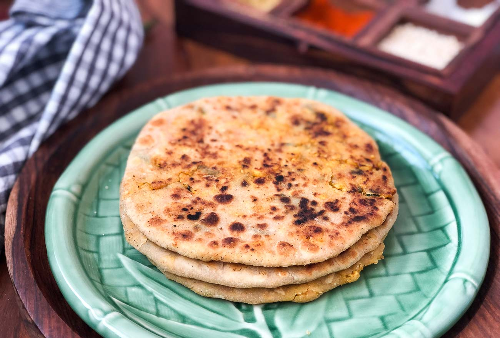
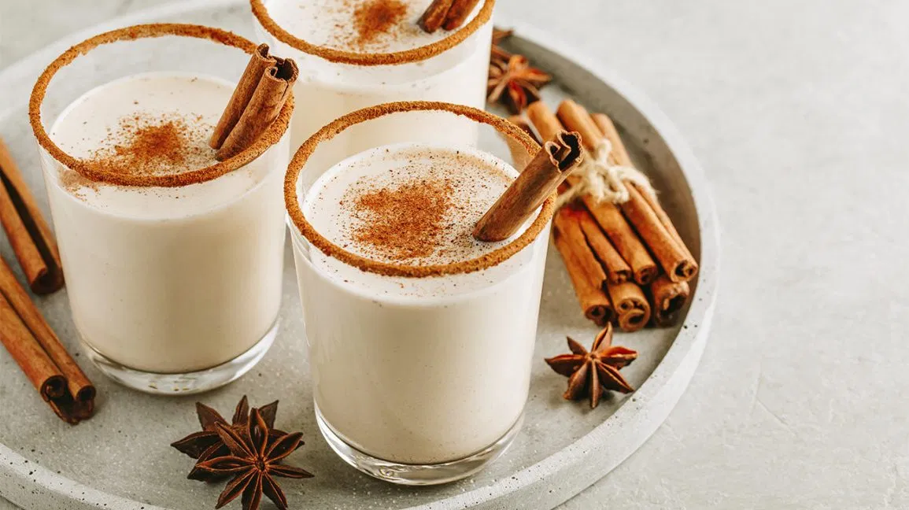
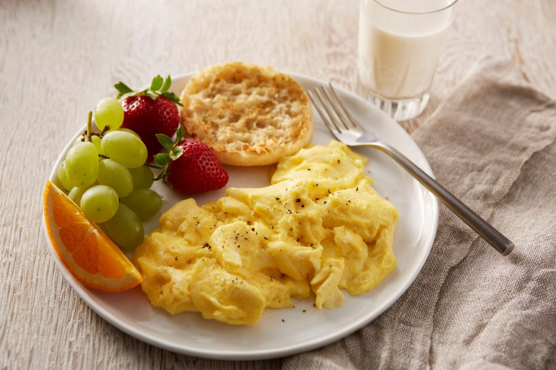

Non Vegetarian Recepies
Chicken Keema Paratha Recipe is a delicious high protein paratha where the chicken keema is delicately spices with garam masala and then stuffed into atta to make a crispy flaky paratha. Serve it as a wholesome one dish meal for lunch or dinner, along with achar and chaas.
...
Instructions:
To begin making the Chicken Keema Paratha Recipe, first prep all the ingredients and keep them ready.
Place the chicken into the Zodiac Master Chef jar with the chopper blade and mince the chicken. It takes just a couple of seconds to mince the chicken in the food processor.
The next step is to cook the Chicken to make the Chicken Keema Masala for the paratha stuffing.
Preheat a pan with a teaspoon of oil. Add onion, garlic and saute until the onions soften.
Add the tomatoes and saute for a few seconds and add the turmeric powder, garam masala powder, red chilli powder, coriander powder, amchur powder, salt and the minced chicken.
Saute the chicken keema along with the spices and tomatoes. The juice from the tomatoes will keep the chicken keema soft.
It takes less than 5 minutes to cook the chicken, so ensure not to over cook it as the chicken keema will become rubbery.
Once done, turn off the heat and add in the chopped mint leaves and stir. Check the salt and spices and adjust accordingly.
The next step is to make the dough for the Chicken Keema Paratha.
Into a bowl, add the flour, salt and add little water at a time and knead to make a soft and supple dough. Drizzle some oil and knead again.
Once done, make 6 to 8 portions of the dough and filling.
Dust the paratha dough in flour, flatten it with your finger and place it on a flat surface. Roll them out thin to approximately 3 inches in diameter circle.
Take a portion of chicken keema filling and place it in the center. Next Gather the sides of the paratha dough and bring them together. Remove the little excess dough which popped out when you brought them together. Press the filled aloo paratha dough down.
Dust the filled chicken keema paratha dough in some flour and roll it gently applying just a pressure. Roll it to desired thickness and proceed the similar way with the remaining portions of paratha dough and filling.
Preheat a skillet on medium heat and place the filled chicken keema paratha. Allow it to cook on medium heat for about 30 to 45 seconds and flip over.
Add this stage add a teaspoon of ghee or oil and spread it around. Flip again, so the oiled side can cook on the skillet. Spread a little more ghee and keep pressing the keema parathas while on the skillet to cook the paratha evenly from inside out.
Do the flipping over process a couple of times until both sides get cooked, browned and crisp evenly. Make sure you cook on medium heat as it allows the aloo parathas to get a crisp on the outside and yet soft texture.
Once the Chicken Keema paratha is cooked transfer to a plate. Continue to the same process with the remaining parathas the same way.
Serve the Chicken Keema Paratha as a wholesome one dish meal for lunch or dinner, along with Shalgam Gajar Aur Gobhi Ka Achar and Kesar Pista Lassi Recipe.

Eggnog, egg nog or egg-nog, historically also known as milk punch or egg milk punch, is a rich, chilled, sweetened, dairy-based beverage. It is traditionally made with milk, cream, sugar, whipped egg whites, and egg yolks.
...
Instructions:
In the bowl of a stand mixer, beat the egg yolks until they lighten in color.
Gradually add the 1/3 cup sugar and continue to beat until it is completely dissolved. Add the milk, cream, bourbon and nutmeg and stir to combine.
Place the egg whites in the bowl of a stand mixer and beat to soft peaks. With the mixer still running gradually add the 1 tablespoon of sugar and beat until stiff peaks form.
Whisk the egg whites into the mixture. Chill and serve.

Scrambled eggs is a dish made from eggs stirred or beaten together in a pan while being gently heated, typically with salt, butter and sometimes other ingredients.
...
Instructions:
BEAT eggs, milk, salt and pepper in medium bowl until blended.
HEAT butter in large nonstick skillet over medium heat until hot. POUR in egg mixture. As eggs begin to set, gently PULL the eggs across the pan with a spatula, forming large soft curds.
CONTINUE cooking—pulling, lifting and folding eggs—until thickened and no visible liquid egg remains. Do not stir constantly. REMOVE from heat. SERVE immediately.
